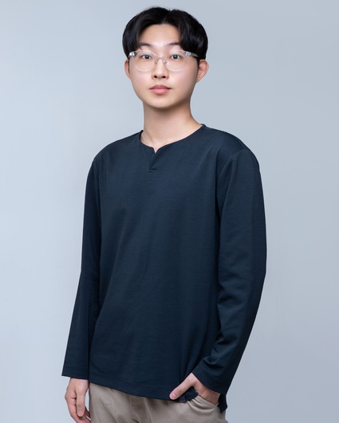
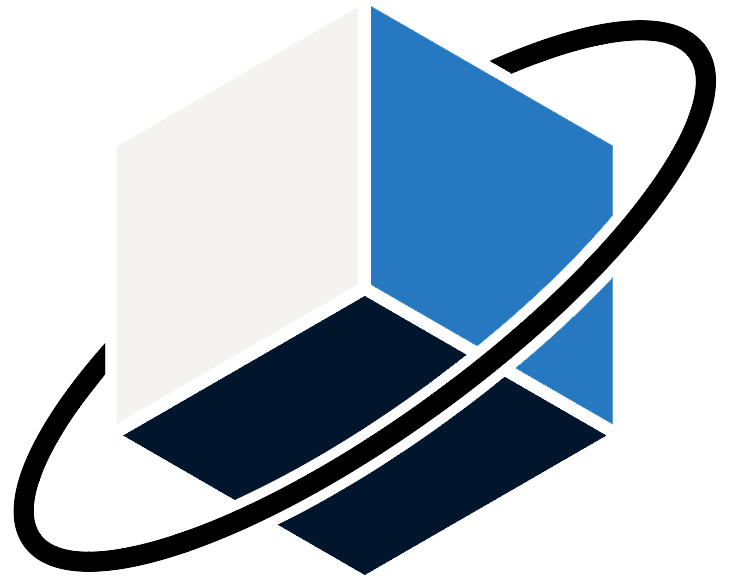

Ph.D. Student · KAIST Aerospace Engineering
DongWook Yang
Designing robots & mechanisms for space.
I'm a space robotics researcher at KAIST ARML, building on the legacy of aerospace research through origami engineering, compliant mechanisms, and emerging AI.

01
About
I'm a Ph.D. student in Aerospace Engineering at KAIST, where I also earned my B.S. and M.S. In the Aerospace Robotics and Mechanisms Laboratory, I work on robots and mechanisms for space exploration.

Current lab Aerospace Robotics and Mechanisms Laboratory (ARML)Education
Career
02
Research
My research centers on space robotics, building on past foundations through origami engineering and new AI technologies to design new robots and mechanisms for space.
-
A
Space Robotics
Planetary rovers and in-situ resource utilization (ISRU).
-
B
Origami & Deployable Mechanisms
Structures that fold compact for launch and deploy in orbit.
-
C
Compliant Mechanisms
Joints and linkages that move through elastic deformation.
Publications
Google Scholar03
Projects
04
Contact
Questions, collaborations, or ideas about space robotics? I'd love to hear from you.
- ydw011 [at] kaist.ac.kr
- Office
- Rm #702, Bldg. W13, KAIST
Daejeon 34141, Republic of Korea